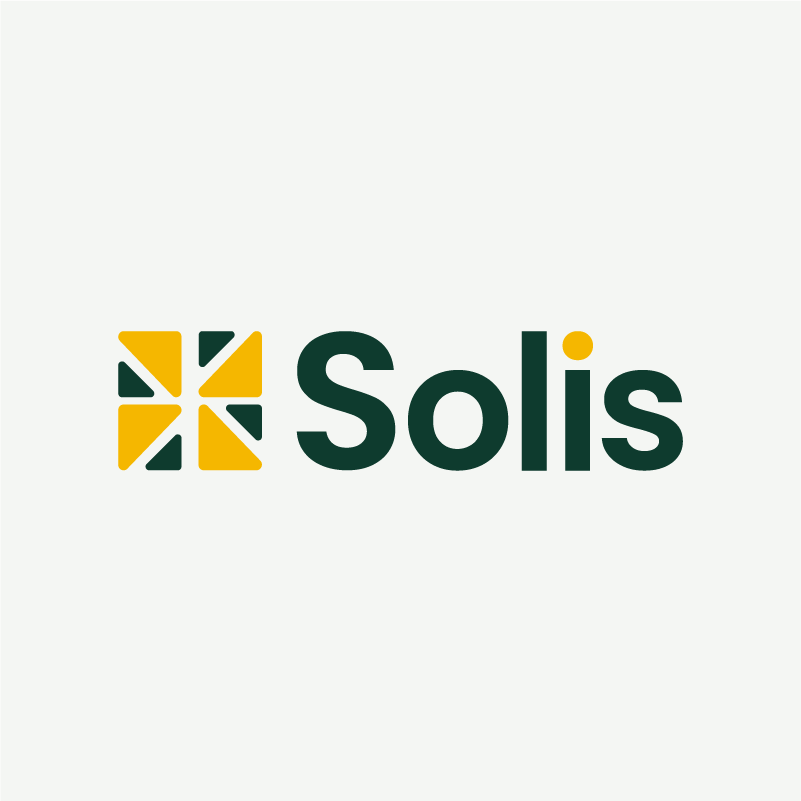
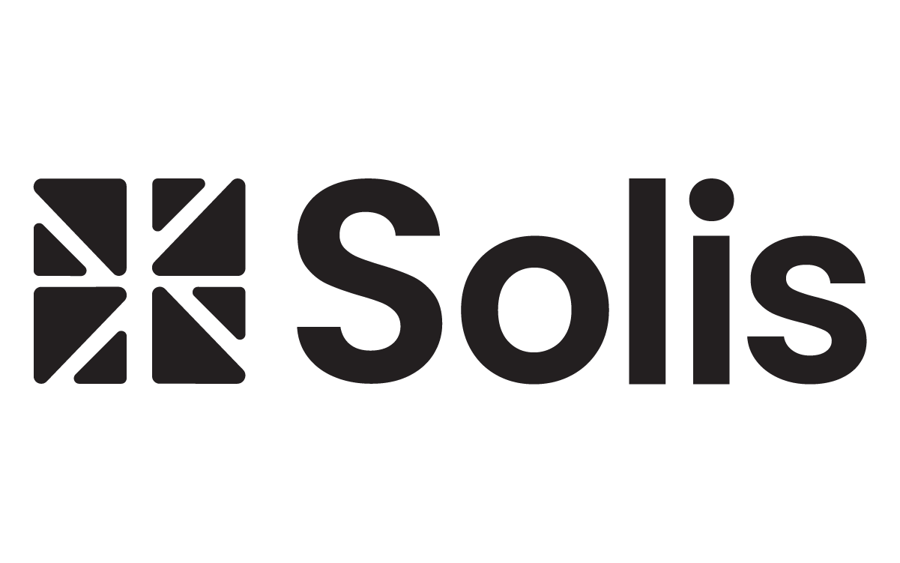
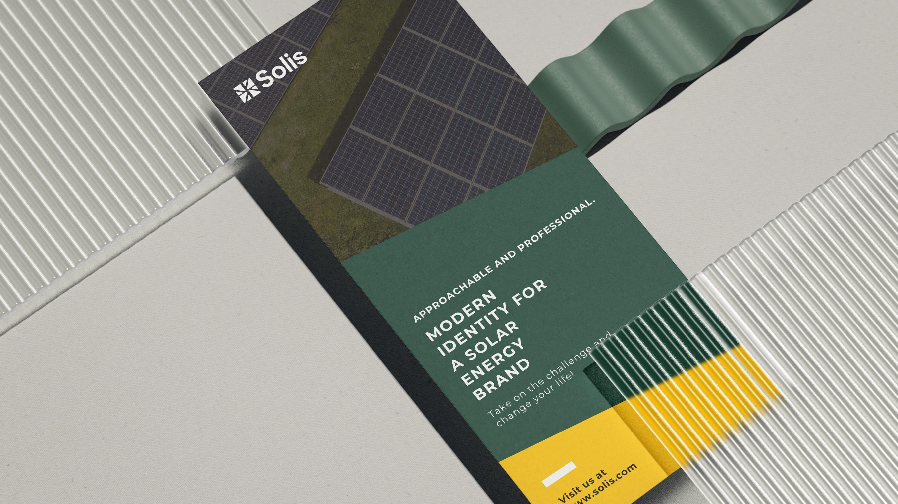
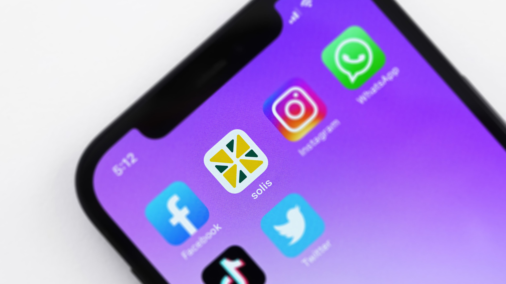
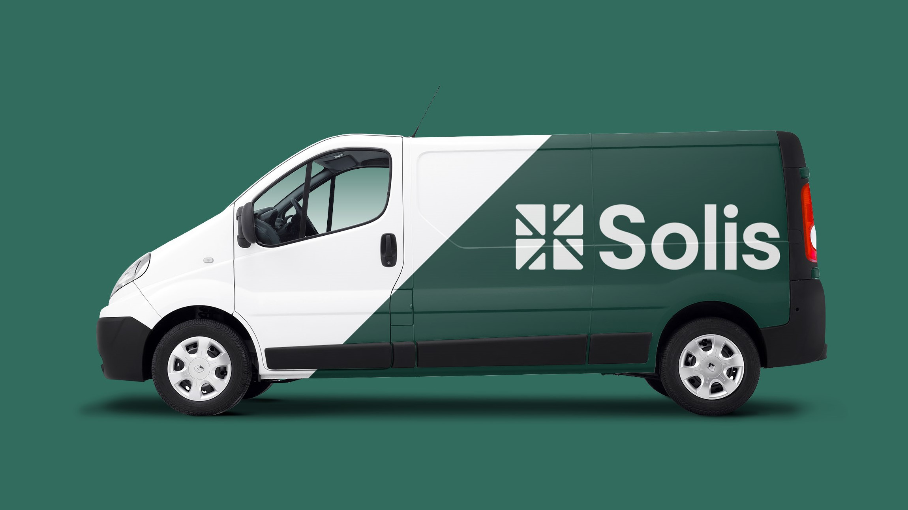
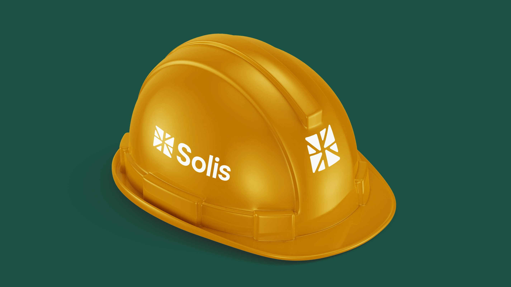

Solis
Modern Identity for a Solar Energy Brand
Details
- Client
- Solis (Concept Project)
- Industry
- Clean Energy / Renewable Energy
- Year
- 2024
Scope
- Services
-
- Brand Identity
- Logo Design
- Visual System
- Key Values
-
- Sustainability
- Precision
- Reliability
The Brief
Solis is a conceptual solar energy company focused on delivering sustainable and reliable power solutions for homes and businesses. The objective was to create a clean, modern identity that reflects renewable energy, environmental responsibility, and the strength of solar power—while remaining approachable and professional.
Concept & Thinking
The logo centers around a modular sun-inspired symbol constructed from geometric segments. The mark abstracts solar rays into structured forms, representing both sunlight and the systematic nature of modern solar technology. Precision, balance, and clarity guided every design decision.
- Geometric Sun Symbol: Built from modular triangular segments.
- Balanced Construction: Reflecting reliability and engineering precision.
- Minimal Composition: For strong recognition across print and digital.
- High-Contrast Color: Pairing for clarity and visual energy.
Logo Symbolism
The symbol represents a stylized sun formed through structured, segmented shapes. This construction references both natural solar rays and the engineered systems behind solar energy technology. The interplay between organic inspiration and geometric precision reflects sustainability backed by innovation.
Typography
The wordmark uses Poppins SemiBold, a modern geometric sans-serif chosen for its clarity, approachability, and strong digital presence. The balanced letterforms complement the structured symbol while maintaining a friendly and contemporary tone.
The rounded terminals soften the technical feel just enough, making the brand feel human rather than purely industrial.
Color Strategy
The palette pairs a deep, grounding green with an energetic gold to balance nature and power.
Deep Evergreen
#0E3B2E
Solar Gold
#F5B700
Soft Off-White
#F4F6F3
Palette Logic:
The green anchors the brand in sustainability and trust. The gold gives it life, symbolizing energy and optimism.
The off-white keeps the interface clean and breathable, preventing it from looking heavy.
Logo Variations


Real-World Applications

Print Collateral
Brochures & flyers

Mobile App
Energy monitoring dashboard

Fleet Branding
Service van graphics

Apparel
Technician uniforms
Final Outcome
The final identity delivers a confident and modern visual system for a solar energy brand. The mark balances natural inspiration with engineered precision, ensuring scalability across digital platforms, signage, and branded materials while maintaining a strong and memorable presence.